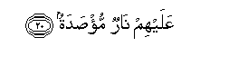

Sacred Texts Islam Index
Hypertext Qur'an Unicode Palmer Pickthall Yusuf Ali English Rodwell
Sūra XC.: Balad, or The City. Index
Previous Next

The Holy Quran, tr. by Yusuf Ali, [1934], at sacred-texts.com
Sūra XC.: Balad, or The City.
Section 1
1. I do call to witness
This City;—
2. Waanta hillun bihatha albaladi
2. And thou art a freeman
Of this City;—
3. And (the mystic ties
of) Parent and Child;—
4. Laqad khalaqna al-insana fee kabadin
4. Verily We have created
Man into toil and struggle.
5. Ayahsabu an lan yaqdira AAalayhi ahadun
5. Thinketh he, that none
Hath power over him?
6. Yaqoolu ahlaktu malan lubadan
6. He may say (boastfully):
"Wealth have I squandered
In abundance!"
7. Ayahsabu an lam yarahu ahadun
7. Thinketh he that none
Beholdeth him?
8. Alam najAAal lahu AAaynayni
8. Have We not made
For him a pair of eyes?—
9. And a tongue,
And a pair of lips?—
10. And shown him
The two highways?
11. But he hath made no haste
On the path that is steep.
12. Wama adraka ma alAAaqabatu
12. And what will explain
To thee the path that is steep?—
13. (It is:) freeing the bondman;
14. Aw itAAamun fee yawmin thee masghabatin
14. Or the giving of food
In a day of privation
15. To the orphan
With claims of relationship,
16. Aw miskeenan tha matrabatin
16. Or to the indigent
(Down) in the dust.
17. Thumma kana mina allatheena amanoo watawasaw bialssabri watawasaw bialmarhamati
17. Then will he be
Of those who believe,
And enjoin patience, (constancy,
And self-restraint), and enjoin
Deeds of kindness and compassion.
18. Ola-ika as-habu almaymanati
18. Such are the Companions
Of the Right Hand.
19. Waallatheena kafaroo bi-ayatina hum as-habu almash-amati
19. But those who reject
Our Signs, they are
The (unhappy) Companions
Of the Left Hand.

20. AAalayhim narun mu/sadatun
20. On them will be Fire
Vaulted over (all round).